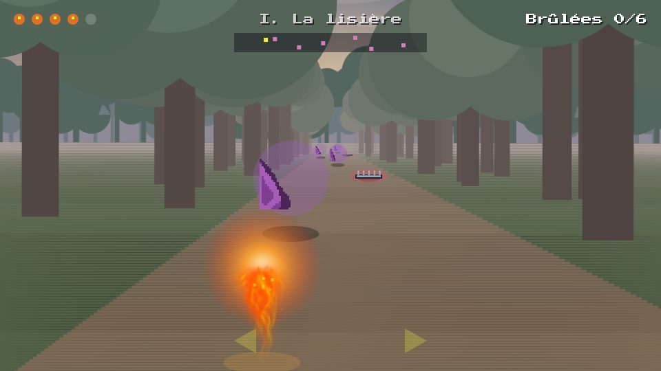
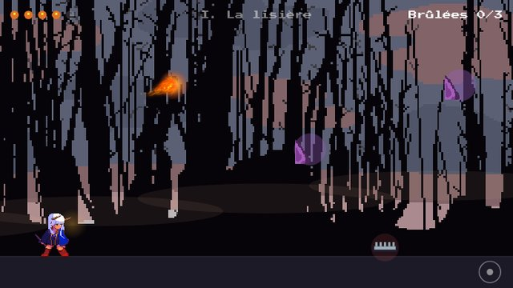
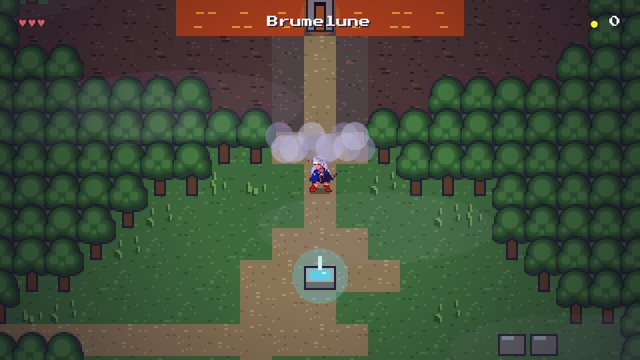

Démo de gameplay
Le gameplay de la V3, sans histoire ni décor : on lance la boule, on la guide à gauche ou à droite avec le doigt ou les flèches, on traverse les cibles et on évite les troncs.
JouerChaque version du jeu est conservée et reste jouable. La plus récente est en haut.

Le gameplay de la V3, sans histoire ni décor : on lance la boule, on la guide à gauche ou à droite avec le doigt ou les flèches, on traverse les cibles et on évite les troncs.
Jouer
La gardienne lance une boule de feu, puis la caméra plonge derrière elle et on la suit dans la forêt. On la guide seulement à gauche ou à droite, en penchant le téléphone. Trois zones.
Jouer
On lance une boule de feu et on courbe sa trajectoire en penchant le téléphone, pour brûler les traces du chasseur qui a tué le cerf blanc. Trois zones.
Mise de côté : le contrôle au gyroscope s'est révélé peu pratique.
Jouer
Jeu de plate-forme en pixel art : l'île de Brumelune, trois missions, le bouclier, la ravageuse et le combat contre le Roi des slimes, avec deux fins.
Jouer